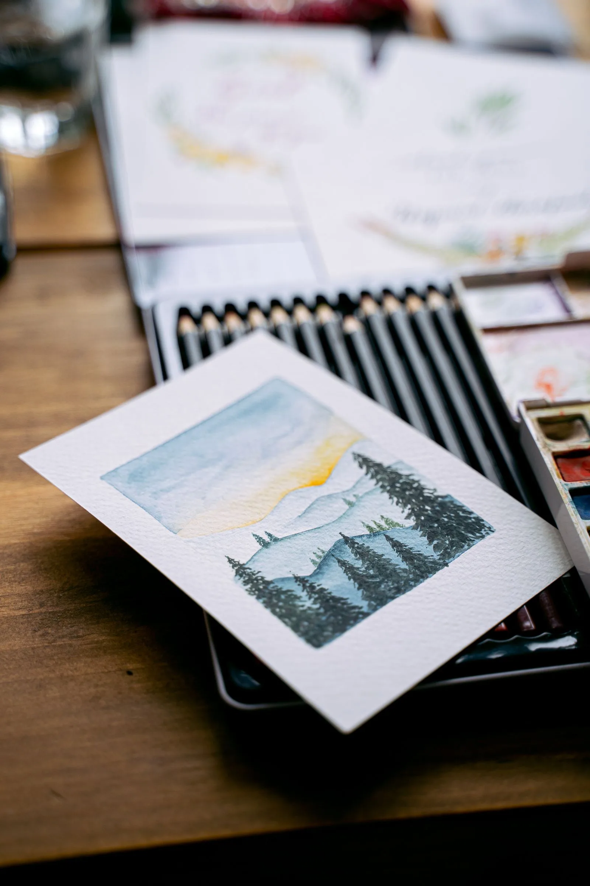

5 bức vẽ nhỏ cỡ bưu thiếp cho người không chuyên
Tác giả: Ruler
Chuyên mục: Bài tập vẽ nhỏ — Cập nhật: 23/11/2026
Nhiều người mới không vẽ vì nghĩ mình phải vẽ được một bức tranh lớn mới gọi là vẽ. Thực ra, bức vẽ nhỏ cỡ bưu thiếp mới là cách bắt đầu đúng nhất. Giấy nhỏ thì ít tốn giấy, ít tốn thời gian, ít áp lực phải đẹp, mà vẫn đủ chỗ để tập đủ kỹ thuật: loang màu, chừa trắng, chồng lớp nhẹ và đi nét trên giấy khô. Vẽ xong năm bức nhỏ, bạn sẽ có năm tấm thiệp tự vẽ để tặng bạn bè, và quan trọng hơn, bạn sẽ biết mình thích vẽ gì nhất.
Bài này hướng dẫn năm bức vẽ, mỗi bức làm trên một tờ giấy khổ nhỏ cỡ A6. Trong bài này, "cỡ bưu thiếp" chỉ dùng để chỉ khổ nhỏ đó, không phải kích thước chuẩn của bưu thiếp. Bạn dùng đúng bộ đồ tối thiểu đã nêu ở bài đầu: giấy 300 gsm cold press, hộp màu pan, cọ tròn cỡ 8 và cỡ 4, hai lọ nước, khăn giấy. Kỹ thuật loang màu ướt trên ướt đã được hướng dẫn đầy đủ ở bài kỹ thuật loang màu, bài này chỉ nhắc ngắn một dòng khi dùng tới, không dạy lại từ đầu. Nếu bạn chưa đọc bài đó, hãy đọc trước rồi quay lại đây.

Ảnh minh họa: ảnh stock của Anna Tarazevich trên Pexels (giấy phép Pexels, dùng thương mại được) — một bức tranh màu nước nhỏ vẽ phong cảnh núi và hoàng hôn, cùng dạng thiệp nhỏ như bài hướng dẫn; không phải tranh do Ruler vẽ.
Chuẩn bị chung cho cả năm bức
Trước khi vẽ bức nào, bạn cắt giấy thành năm tờ khổ nhỏ bằng nhau. Bạn có thể cắt từ một tờ giấy lớn, hoặc dùng sổ giấy màu nước khổ nhỏ đã cắt sẵn. Dán bốn cạnh mỗi tờ lên một tấm bìa cứng bằng băng dính giấy, chừa lại một viền trắng nhỏ quanh mép giấy. Viền trắng này vừa giữ giấy phẳng, vừa tạo khung tự nhiên cho bức thiệp khi bạn bóc băng dính ra.
Bạn pha màu trên đĩa trắng và thử màu trên một mẩu giấy nháp cùng loại trước khi vẽ vào thiệp thật. Thói quen thử màu này được nhắc ở bài bộ đồ tối thiểu, và nó càng quan trọng khi giấy nhỏ, vì bạn không có chỗ để sửa nhiều. Mỗi bức trong bài này đều có ba phần: chuẩn bị màu, vẽ phần mềm bằng loang màu, rồi thêm chi tiết khi giấy khô. Bạn đừng bỏ qua bước chờ khô giữa hai phần, vì đó là điểm khác nhau giữa bức tranh trong và bức tranh đục.
Thời gian cho mỗi bức khoảng 20 đến 30 phút theo ước tính thực hành (tùy tay người vẽ), chưa tính thời gian chờ khô. Bạn có thể vẽ một bức mỗi tối, năm tối là xong năm bức. Bạn cũng có thể vẽ cả năm bức trong một buổi cuối tuần, nhưng hãy vẽ xong bức này, để khô hẳn, rồi mới vẽ bức sau, đừng vẽ dồn khi tay còn vội.
Bức 1: Hoàng hôn trên biển
Bức hoàng hôn là bài tập loang màu mảng lớn dễ nhất, vì bạn không cần vẽ hình gì cụ thể, chỉ cần màu chuyển đẹp.
Bạn làm ướt toàn bộ tờ giấy bằng cọ sạch. Bạn chạm màu vàng nhạt ở khoảng giữa tờ giấy, nơi mặt trời lặn. Bạn chạm màu cam nhạt ngay dưới vàng, rồi chạm màu hồng nhạt ở phía trên vàng. Ba màu gặp nhau trên giấy ướt sẽ tự chuyển thành dải hoàng hôn, không cần bạn tô đều. Bạn chừa lại một khoảng trắng nhỏ hình tròn ở giữa làm mặt trời, bằng cách không chạm màu vào đó. Nếu lỡ chạm màu vào, bạn dùng khăn giấy sạch chạm nhẹ khi màu còn ướt để lấy bớt màu ra.
Khi lớp màu đã khô hẳn, bạn dùng cọ tròn cỡ 4 vẽ thêm vài nét ngang màu xanh dương đậm ở nửa dưới tờ giấy làm mặt biển. Bạn vẽ nét ngang ngắn, không đều nhau, để tạo cảm giác sóng. Bạn thêm một vệt sáng màu vàng nhạt ngay dưới mặt trời, kéo dài xuống dưới, làm đường phản chiếu trên biển. Bạn không cần vẽ thuyền hay chim, vì bức này đẹp nhờ màu, không nhờ chi tiết.
Điểm cần nhớ ở bức này là đừng tô thêm màu khi lớp loang còn ướt. Nếu bạn thấy màu nhạt, hãy đợi khô rồi phủ thêm một lớp mỏng lên trên, thay vì quấy vào lớp đang ướt. Cách phủ lớp mỏng lên lớp đã khô này gọi là chồng lớp, và bạn sẽ dùng nó nhiều ở các bức sau.
Bức 2: Một chiếc lá đơn
Bức lá đơn dạy bạn loang màu trong một vùng có giới hạn, kỹ năng quan trọng nhất khi vẽ hoa và lá.
Bạn phác nhẹ hình một chiếc lá bằng bút chì HB, chỉ một đường viền ngoài và một đường gân giữa. Bạn làm ướt chỉ vùng trong hình lá, không làm ướt cả tờ giấy. Bạn chạm màu xanh lá đậm vào giữa lá, rồi chạm thêm một chút vàng vào một cạnh khi màu vẫn còn ướt. Màu sẽ lan trong khuôn hình lá và dừng lại ở mép khô, tạo hình lá mềm mà không cần vẽ viền đậm.
Khi lá đã khô, bạn dùng cọ tròn cỡ 4 vẽ đường gân giữa bằng màu xanh đậm hơn, đi một nét từ cuống lá lên đầu lá. Bạn thêm vài nét gân nhỏ chéo sang hai bên, nhưng chỉ vẽ vài nét, đừng vẽ kín lá. Bạn có thể thêm một chấm sáng bằng cách dùng cọ sạch ẩm chạm nhẹ vào một chỗ trên lá khi màu vừa khô, rồi thấm bớt màu ra bằng khăn giấy. Chấm sáng này làm lá trông có độ cong và có ánh sáng.
Bức này thường hỏng ở hai chỗ: làm ướt cả tờ giấy nên màu lan ra ngoài hình lá, và vẽ gân quá nhiều khiến lá mất độ mềm. Nếu bạn mắc lỗi đầu, hãy nhớ lần sau chỉ làm ướt đúng vùng hình lá. Nếu bạn mắc lỗi sau, hãy nhớ gân chỉ là gợi ý, không phải vẽ thật chi tiết như lá thật.
Bức 3: Một bông hoa ba cánh
Bức hoa ba cánh dạy bạn kết hợp loang màu cho phần mềm và vẽ trên giấy khô cho phần sắc nét.
Bạn phác nhẹ ba hình tròn nhỏ xếp thành hình tam giác, mỗi hình là một cánh hoa. Bạn làm ướt từng cánh một, không làm ướt cả ba cùng lúc, vì bạn cần kiểm soát từng cánh. Bạn chạm màu hồng hoặc tím vào giữa mỗi cánh, để màu lan ra mép. Bạn đợi cánh thứ nhất khô một chút rồi mới làm cánh thứ hai, để màu hai cánh không chảy vào nhau.
Khi ba cánh đã khô hẳn, bạn dùng cọ tròn cỡ 4 chấm một chấm vàng đậm ở giữa hoa làm nhụy. Bạn vẽ thêm một cành nhỏ màu xanh lá từ dưới hoa kéo xuống, đi nét trên giấy khô nên nét sẽ sắc và rõ. Bạn thêm một chiếc lá nhỏ bên cạnh cành, vẽ theo cách đã học ở bức lá đơn, nhưng thu nhỏ lại.
Bức này là bức đầu tiên bạn cần kiên nhẫn chờ khô giữa các bước. Nếu bạn vội vẽ nhụy khi cánh còn ướt, nhụy sẽ loang ra và làm hoa mất hình. Nếu bạn đợi khô hẳn, nhụy sẽ nằm gọn ở giữa và hoa sẽ rõ hình. Sự khác biệt chỉ nằm ở thời gian chờ, không nằm ở tay nghề.
Bức 4: Núi xa trong sương
Bức núi xa dạy bạn dùng độ nhạt đậm để tạo chiều sâu, mà không cần vẽ chi tiết.
Bạn làm ướt toàn bộ tờ giấy. Bạn chạm màu xanh dương rất nhạt ở phía trên tờ giấy làm bầu trời, rồi chạm màu xanh xám nhạt ở khoảng giữa làm dãy núi xa. Vì màu nhạt và giấy ướt, dãy núi sẽ mờ và mềm, giống núi trong sương. Bạn đợi lớp này khô hẳn.
Khi lớp đầu đã khô, bạn vẽ thêm dãy núi gần hơn bằng màu xanh dương đậm hơn, chỉ vẽ ở nửa dưới tờ giấy. Dãy núi gần đậm hơn dãy núi xa, nên mắt người xem sẽ tự hiểu núi gần ở trước, núi xa ở sau. Bạn không cần vẽ cây hay nhà trên núi, vì càng ít chi tiết thì cảm giác xa càng rõ. Bạn thêm một vệt trắng nhỏ ở chân núi gần làm sương, bằng cách dùng khăn giấy chạm nhẹ khi màu vừa vẽ xong còn hơi ẩm.
Bức này dạy bạn một nguyên tắc quan trọng của màu nước: vẽ từ nhạt đến đậm, từ xa đến gần, từ mềm đến sắc. Nếu bạn vẽ núi gần trước rồi mới vẽ núi xa, bạn sẽ khó làm núi xa mờ được, vì màu đậm đã chiếm chỗ. Vẽ theo thứ tự nhạt trước đậm sau giúp bạn kiểm soát bức tranh dễ hơn nhiều.
Bức 5: Trăng trên mặt nước đêm
Bức trăng đêm là bức cuối cùng, dùng ít màu nhất nhưng cần chờ khô kỹ nhất.
Bạn làm ướt toàn bộ tờ giấy. Bạn chạm màu xanh dương đậm ở phía trên và hai bên tờ giấy, chừa lại một khoảng tròn trắng ở phía trên làm mặt trăng, và một vệt dọc trắng ở phía dưới làm đường phản chiếu của trăng trên nước. Bạn để màu loang tự nhiên, không tô đều. Khi lớp màu đã khô hẳn, bạn dùng cọ tròn cỡ 4 vẽ thêm vài nét ngang ngắn màu xanh đậm hơn ở nửa dưới, tạo sóng nước. Bạn thêm vài chấm trắng nhỏ bằng cách dùng đầu cọ sạch chạm nhẹ để lấy màu ra, làm sao trên trời.
Bức này thường hỏng khi người vẽ không chừa trắng đủ sớm. Nếu bạn tô kín cả tờ giấy rồi mới nhớ tới mặt trăng, bạn sẽ phải lấy màu ra rất khó, và mặt trăng sẽ không trắng được. Vì vậy, trước khi chạm màu, bạn hãy nhìn tờ giấy trắng và quyết định: mặt trăng ở đâu, đường phản chiếu ở đâu, sao ở đâu. Chừa trắng là quyết định đầu tiên, không phải việc sửa sau.
Bảng tóm tắt năm bức: bạn tập được gì ở mỗi bức
Bảng dưới đây được soạn riêng cho bài này để bạn đối chiếu sau khi vẽ xong. Bảng không lấy từ nguồn nào, mà tổng hợp từ năm bức trên.
| Bức | Kỹ thuật chính | Điểm khó nhất | Dấu hiệu làm đúng |
|---|---|---|---|
| Hoàng hôn trên biển | Loang mảng lớn, chừa trắng | Đừng quấy khi màu đang loang | Màu chuyển mềm, mặt trời trắng rõ |
| Lá đơn | Loang trong vùng có giới hạn | Chỉ làm ướt trong hình lá | Màu dừng ở mép lá, không lan ra ngoài |
| Hoa ba cánh | Loang từng cánh, vẽ nét khô | Chờ khô giữa các cánh | Ba cánh rõ hình, nhụy nằm gọn ở giữa |
| Núi xa trong sương | Nhạt trước đậm sau | Vẽ núi xa nhạt, núi gần đậm | Có chiều sâu, núi xa mờ hơn núi gần |
| Trăng trên mặt nước | Chừa trắng từ đầu | Quyết định vị trí trăng trước khi tô | Trăng trắng rõ, đường phản chiếu thẳng |
Bạn có thể dùng bảng này để tự chấm bài của mình. Nếu bức nào chưa đạt dấu hiệu ở cột cuối, bạn đọc lại phần điểm khó nhất của bức đó và vẽ lại một lần nữa trên tờ giấy mới. Vẽ lại cùng một bức hai lần thường tiến bộ nhanh hơn là vẽ năm bức khác nhau mà không sửa lỗi.
Sau khi vẽ xong năm bức thì làm gì
Bạn để năm bức khô hẳn qua đêm, rồi bóc băng dính giấy ở bốn cạnh ra. Bạn sẽ thấy mỗi bức có một viền trắng nhỏ, giống khung thiệp. Bạn có thể giữ năm bức trong một cuốn sổ, hoặc tặng cho người thân kèm một dòng chữ viết tay ở mặt sau. Bạn đừng vội đóng khung hay ép plastic ngay, vì màu nước cần khô hẳn và cần thoáng khí. Cách giữ tranh khỏi phai và ẩm được viết đầy đủ ở bài sửa lỗi và giữ tranh của website, bạn đọc bài đó trước khi treo tranh lên tường.
Bạn cũng nên chụp lại năm bức bằng điện thoại dưới ánh sáng tự nhiên, để so sánh với năm bức tiếp theo bạn vẽ sau này. Khi bạn nhìn lại sau một tháng, bạn sẽ thấy mình tiến bộ ở điểm nào, và điểm nào vẫn cần tập thêm. Đó là cách tự học hiệu quả hơn là chỉ vẽ mà không lưu lại.
Kết luận
Năm bức vẽ nhỏ cỡ bưu thiếp trong bài này gồm hoàng hôn trên biển, lá đơn, hoa ba cánh, núi xa trong sương và trăng trên mặt nước đêm. Mỗi bức tập một kỹ năng khác nhau, nhưng cùng dùng một bộ đồ tối thiểu và cùng một nguyên tắc: làm ướt đúng vùng, chạm màu rồi để màu tự lan, chờ khô hẳn rồi mới thêm nét sắc.
Bạn không cần vẽ đẹp cả năm bức ngay lần đầu. Bạn chỉ cần vẽ xong năm bức, rồi chọn một bức mình thích nhất để vẽ lại. Lần vẽ lại đó sẽ cho bạn thấy rõ nhất mình đã học được gì.
Nguồn tham khảo
- Mỹ thuật Bụi, "Hướng dẫn cách tô màu nước đẹp cho người mới bắt đầu" — giấy trắng là vùng sáng nhất, giấy 300 gsm cold press, cọ tổng hợp đủ dùng (truy cập 23/11/2026): https://mythuatbui.edu.vn/cach-to-mau-nuoc
- PM Art & Crafts, "Hướng dẫn vẽ màu nước cơ bản cho người mới bắt đầu" — loang màu ướt trên ướt, làm ướt giấy, thêm màu thứ hai khi màu đầu còn ướt (truy cập 23/11/2026): https://www.pmartcraft.com/huong-dan-ve-mau-nuoc-co-ban-cho-nguoi-moi-bat-dau-hd127.html
- Watercolor Affair, "Watercolor Transparency: A Beginner's Guide" — vẽ từ nhạt đến đậm, chồng lớp khi lớp dưới đã khô hẳn, ánh sáng đi qua lớp màu trong (truy cập 23/11/2026): https://www.watercoloraffair.com/watercolor-transparency/